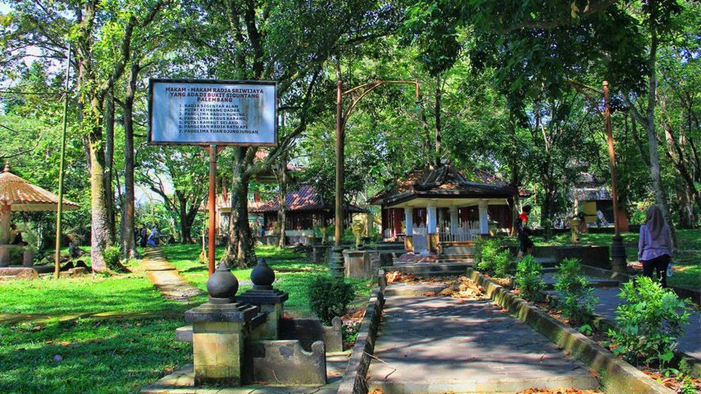

Gunung Dempo

Gunung Dempo adalah gunung berapi aktif yang terletak di perbatasan Kota Pagar Alam dan Kabupaten Lahat, Provinsi Sumatera Selatan. Gunung ini memiliki ketinggian sekitar 3.173 meter di atas permukaan laut, menjadikannya puncak tertinggi di Sumatera Selatan. Gunung Dempo merupakan bagian dari Pegunungan Bukit Barisan dan dikenal dengan kawah aktifnya di puncak serta pemandangan alam yang memukau. Di sekitarnya, terdapat perkebunan teh yang luas dan udara yang sejuk, menjadikannya tujuan favorit para pendaki dan wisatawan.
SelengkapnyaPulau Kemaro
Pulau Kemaro adalah sebuah pulau kecil yang terletak di tengah Sungai Musi, Palembang, Sumatera Selatan. Pulau ini terkenal sebagai destinasi wisata religi dan budaya, khususnya bagi masyarakat Tionghoa. Salah satu daya tarik utama di Pulau Kemaro adalah Pagoda sembilan lantai dan Klenteng Hok Tjing Rio yang menjadi tempat peribadatan serta pusat perayaan Cap Go Meh setiap tahun. Selain itu, terdapat pula makam dari Tan Bun An dan Siti Fatimah, dua tokoh legendaris yang kisah cintanya sangat melegenda di Palembang.
SelengkapnyaTaman Kambang Iwak Besak
Taman Kambang Iwak Besak adalah taman kota yang terletak di pusat Kota Palembang, Sumatera Selatan. Taman ini dibangun pada masa kolonial Belanda dan memiliki danau buatan yang menjadi ikon utamanya. Nama "Kambang Iwak" sendiri berarti kolam ikan, karena danau di tengah taman ini dulunya digunakan sebagai tempat memelihara ikan. Taman ini dikelilingi oleh pepohonan rindang dan jalan setapak yang cocok untuk berjalan kaki atau berolahraga ringan, menjadikannya salah satu ruang terbuka hijau favorit masyarakat kota.
SelengkapnyaPalembang Bird Park
Palembang Bird Park adalah taman rekreasi edukatif yang terletak di kawasan Jakabaring, tepatnya di sekitar OPI Mall, Palembang. Tempat ini menjadi salah satu destinasi favorit keluarga karena menawarkan pengalaman langsung berinteraksi dengan berbagai jenis burung dan hewan. Di dalamnya terdapat lebih dari 100 spesies burung, mulai dari burung parkit, jalak, kakak tua, hingga burung eksotis seperti macaw. Selain burung, pengunjung juga dapat melihat hewan lain seperti kelinci, iguana, rusa, kura-kura, kuda poni, hingga ular. Taman ini juga menyediakan kandang burung besar tempat pengunjung bisa masuk dan memberi makan burung secara langsung, serta area khusus seperti Rumah Kucing yang diisi oleh berbagai jenis kucing peliharaan.
SelengkapnyaBukit Siguntang
Bukit Siguntang adalah situs bersejarah yang terletak di bagian barat Kota Palembang, sekitar 3 km dari pusat kota. Bukit ini memiliki ketinggian sekitar 27 meter dan dikenal sebagai tempat suci peninggalan Kerajaan Sriwijaya. Di puncaknya ditemukan berbagai peninggalan arkeologis seperti arca Buddha dan struktur stupa yang mengindikasikan peran pentingnya sebagai pusat keagamaan dan budaya pada abad ke-7 hingga ke-10 Masehi. Bukit ini juga menjadi tempat yang penuh nilai spiritual, sering dikunjungi sebagai lokasi ziarah dan refleksi sejarah oleh masyarakat lokal maupun wisatawan dari negara tetangga.
Selengkapnya